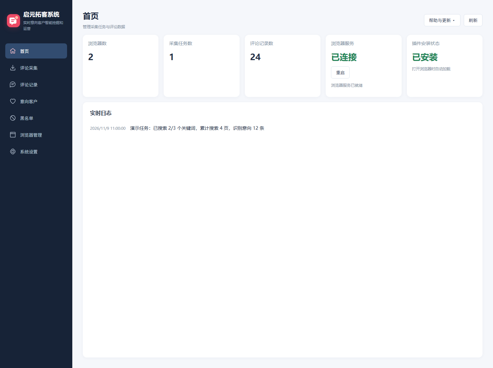
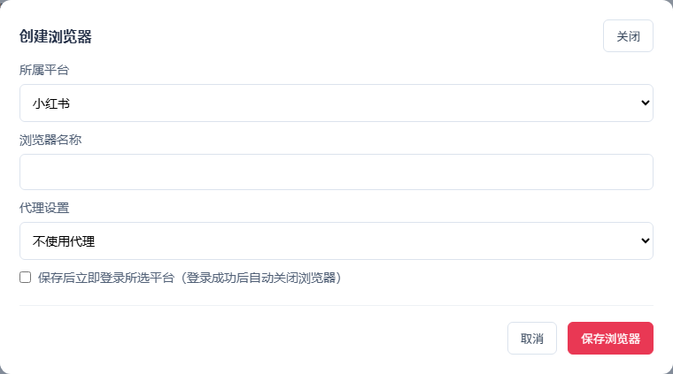
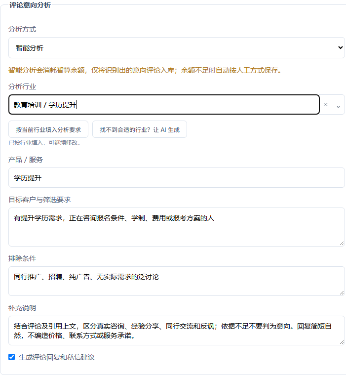
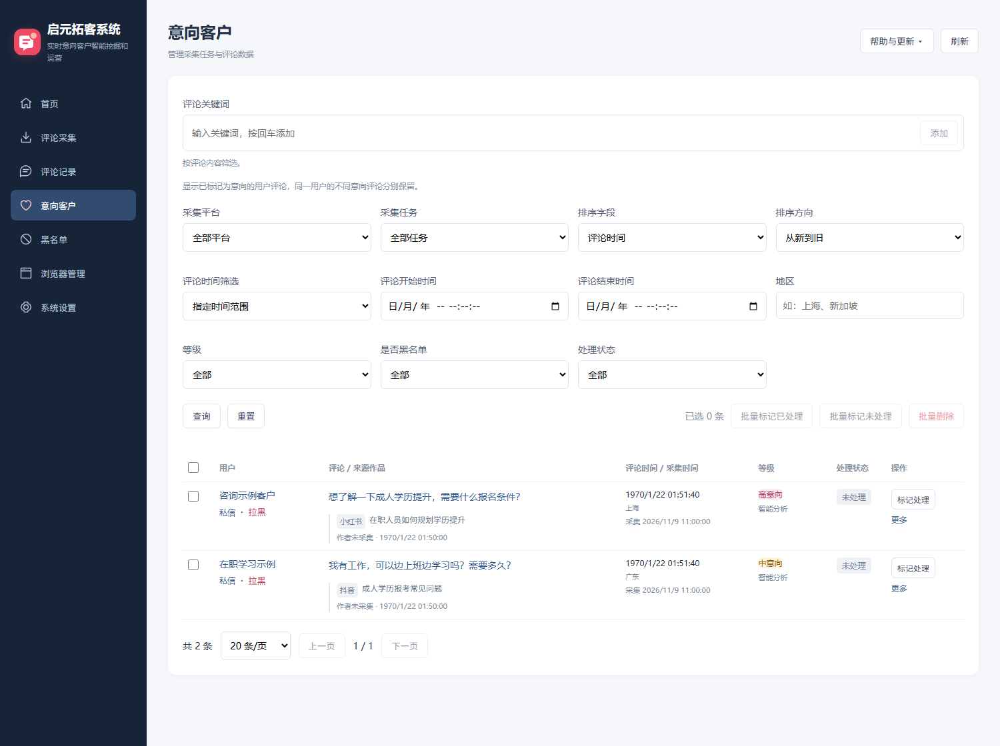
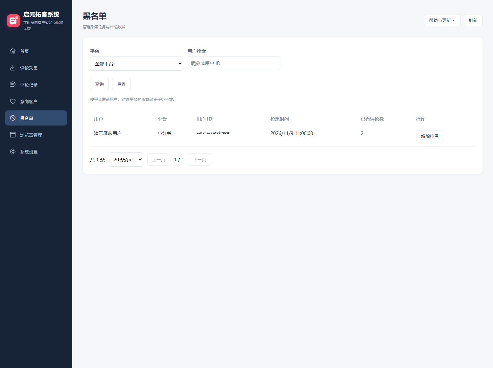
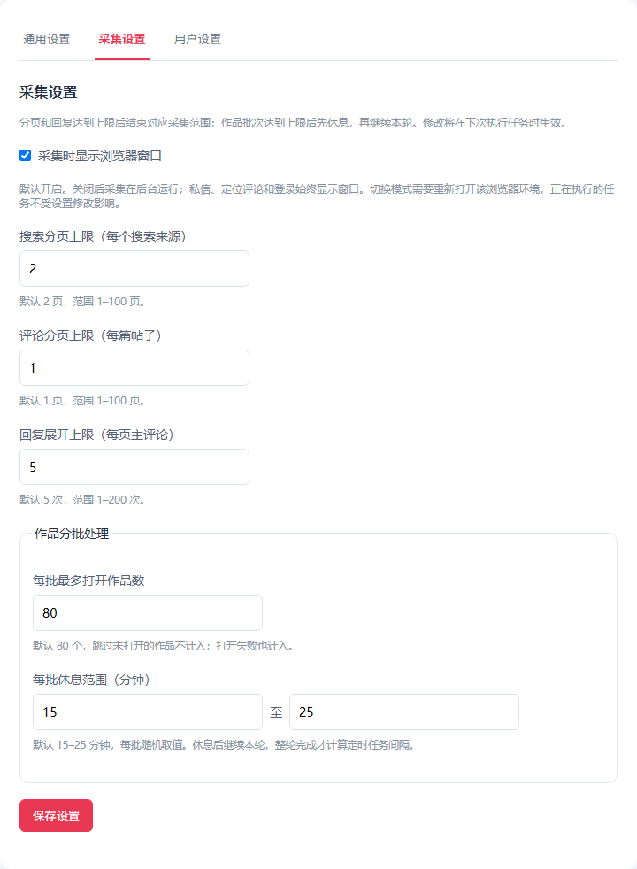
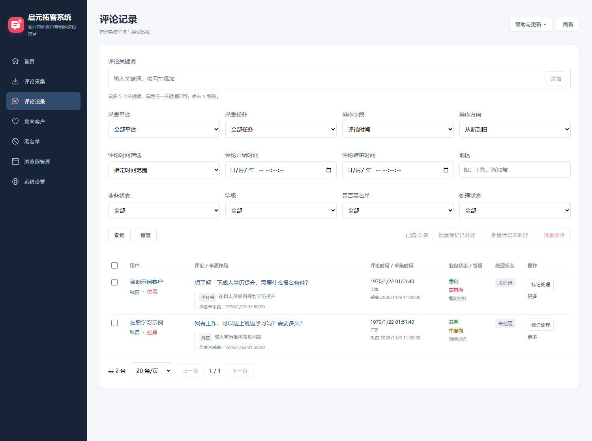

搜索关键词或指定作品，持续发现业务相关评论。
实时意向客户
智能挖掘和运营
启元拓客系统将小红书、抖音的作品评论采集、意向识别和客户跟进串联起来，帮助你从业务相关讨论中及时发现有需求的潜在客户。
结合作品与评论上下文，识别高、中、低意向，并生成跟进建议。
帮助降低账号关联风险；合理设置访问频率，降低触发验证的概率。
产品持续迭代，后续计划支持更多自媒体平台与智能运营功能，以实际发布版本为准。

三步开始拓客
使用前：使用管理员提供的账号和密码登录软件。账号需要开通拓客产品，并保持连带的指纹浏览器套餐有效。系统会保留登录状态；若服务端注销会话，则需要重新登录。
- 创建浏览器并登录选择平台，创建独立环境，再完成平台登录。
- 创建采集任务填写关键词或作品链接，选择业务目标，推荐开启智能分析。
- 开启并跟进客户手动执行或设置自动循环，在意向客户中查看结果、选择浏览器进行沟通。
1. 创建浏览器，登录采集平台
- 进入“浏览器管理”，点击创建浏览器。
- 选择“小红书”或“抖音”，填写容易辨认的名称；按实际网络需要设置代理。
- 勾选“保存后立即登录”可直接打开登录页，手动完成扫码登录。
- 登录成功后回到客户端，确认该环境显示已登录。
一个浏览器记录只对应一个平台。小红书和抖音使用各自的浏览器环境，后续任务选择相同平台的已登录环境。

2. 创建采集任务
进入“评论采集 → 创建任务”，依次填写任务名称、采集平台和执行浏览器。
- 关键词：每行一个，最多 10 个。不知道如何填写时，点击“不会填写？推荐关键词”，按行业选择精简 3 个、常用 5 个或扩展 8 个。
- 作品链接：每行一个，最多 50 个，需为对应平台支持的真实作品地址。
- 没有适合的行业：在行业搜索中输入自己的业务，使用 AI 推荐；确认生成结果后才覆盖原文本。
推荐：开启智能意向分析
“评论意向分析”选择“智能分析”，然后明确告诉 AI：你提供什么服务、想找哪些客户、哪些内容需要排除。
示例：学历提升业务
产品／服务：学历提升咨询。
目标客户：正在咨询报考条件、学制、费用和报名方案的人。
排除：同行广告、招聘、没有实际需求的泛讨论。
选择行业可以填入默认要求；没有对应行业时，可让 AI 生成分析要求，预览后应用。建议保留“生成评论回复和私信建议”，后续跟进时可复制并编辑。

智算余额怎么消耗？
按作品组织评论，评论较多时会分批分析。轻量模型单次分析通常低至厘级至分级，示例约 0.01 元；实际随模型、输入长度、回复生成和重试情况变化，不是固定单价。
“用户设置 → 智算余额 → 消费记录”可查看调用用途、状态及模型消费。模型消费不含手续费，实际余额以服务端结算为准。
3. 开启任务：手动或自动
手动：点击“开启”，执行一轮后结束。自动：每轮完成后，在配置的随机间隔与时间范围内启动下一轮。
可设置每天的运行时段。每批打开作品达到上限后会暂时休息，休息后继续同一轮；只有整轮完成后才计算下一轮任务间隔。
- “暂停”保留当前任务，可以继续。
- “结束”强制终止本轮，不会继续剩余作品。
- 出现平台验证时，任务自动暂停并保留窗口；请手动完成验证再继续。
- 休息和采集期间，请勿操作执行任务的浏览器。
“累计搜索页数”会累加多个关键词；每个关键词仍受单独分页上限限制。“已搜索 X/Y 个关键词”显示完成的搜索来源数量。
意向客户：从发现到精细运营
手动标记的意向评论与 AI 命中的评论都会出现在这里。用高、中、低意向等级安排跟进优先级，同一用户的不同意向评论分别保留。

- 点击“私信”或评论正文，先选择对应平台已登录的浏览器。
- 如果 AI 已提供回复建议，可以复制、修改后使用。
- 系统复用已打开的浏览器并激活窗口，协助打开私信或定位评论。
- 由你核实并手动发送，根据客户实际问题交流，再标记已处理。
黑名单：减少无效线索
评论用户旁点击“拉黑”，确认是否同时将其已有评论标记为排除；默认勾选。之后该用户在同一平台的评论不再采集。

在“黑名单”中可以解除，默认将相关评论恢复为初始状态。黑名单按平台区分，不会误影响另一个平台。
系统设置
通用设置：查看当前版本；按 1／3／6／12 个月清理历史数据。先预览数量，再确认执行，默认保护意向客户。任务运行或 AI 未完成时不能清理。
采集设置：设置浏览器窗口显示、每个搜索来源的分页上限、每篇作品评论分页、回复展开上限和作品分批处理。

用户信息：点击软件右上角账号名称，查看账号、产品有效期、浏览器配额、智算余额及消费记录；点击旁边下拉箭头可退出登录。退出前请完成采集任务及待核对费用。本地客户数据保留并绑定原账号，切换账号请使用独立数据目录。
清理本地消费记录不影响服务端账单。最小去重和已分析标记会保留，避免清理后重复采集与消费；最近一次清理前的数据库备份可用于恢复，确认无误后可手动删除备份。
更新与问题排查
右上角“帮助与更新”提供操作手册、系统更新、导出日志和问题反馈。
消费记录显示“排队中”正常吗？
表示评论已采集，等待提交 AI；尚未产生模型消费。处理中的调用请耐心等待，不要重复开启任务。
为什么回退人工保存？
可能是余额不足、任务已结束、输入缺少正文，或模型结果没有通过结构及引用校验。看实时日志和消费记录中的具体原因；人工保存的数据仍可筛选。
评论定位或私信没有反应怎么办？
先确认选择了同一平台的已登录浏览器，等待页面加载。遇到平台验证需手动处理；保留日志，通过问题反馈提交操作步骤。
如何更新软件？
打开系统更新，查看更新历史和新版本，下载校验完成后结束任务，再点击重启升级。本地客户数据与授权保留。macOS 的安装支持以正式发布版本为准。
如何反馈问题？
填写发生问题的操作、预期结果、实际现象和大致时间。可附带脱敏运行日志，不包含客户数据库、浏览器 Cookie 或卡密。提交成功后即可关闭窗口。
评论记录：人工筛选与整理
通过关键词、平台、任务、时间、地区、业务状态和等级筛选评论。时间既可以指定范围，也可以选择最近 N 分钟／小时／天。

人工分析的评论可通过“更多 → 修改状态／等级”标记为意向或排除。“查看上下文”按需显示一级评论、直接引用和当前评论，不需要反复打开作品理解回复关系。